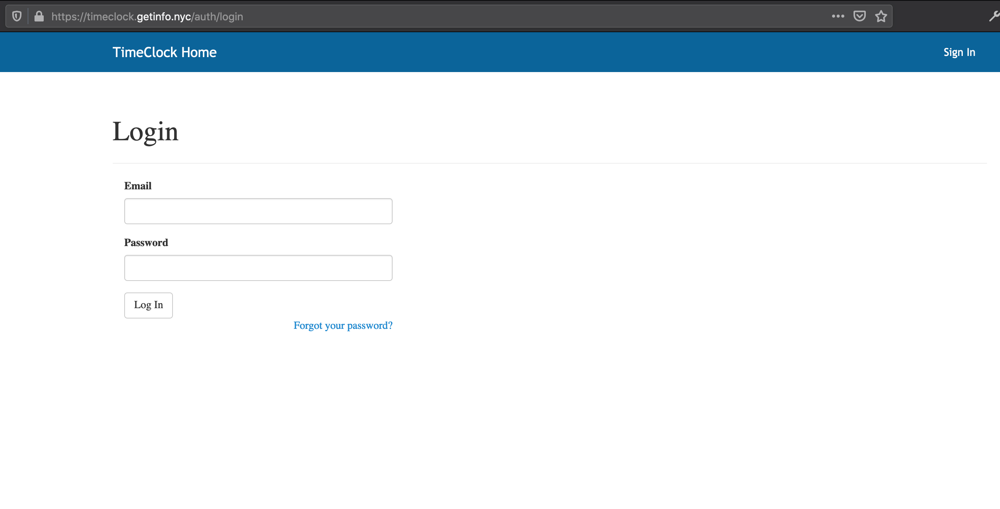
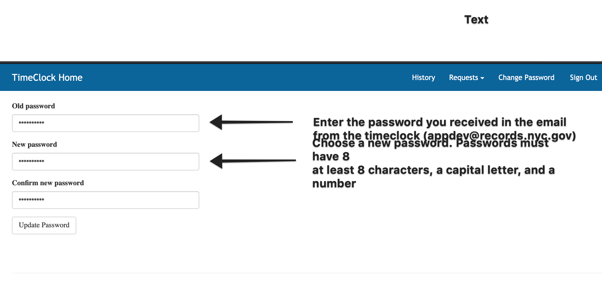
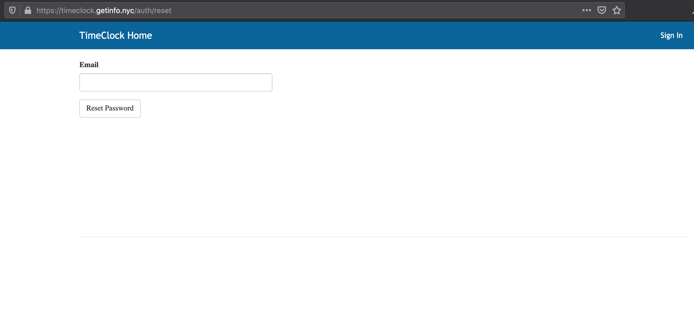
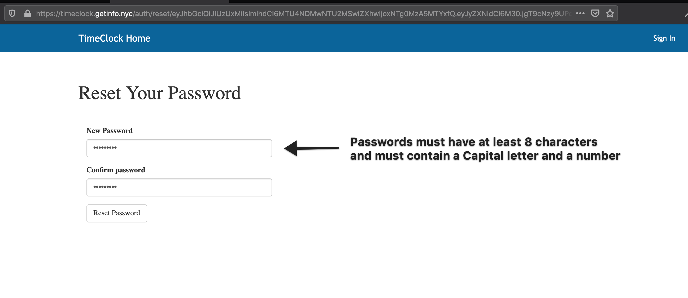
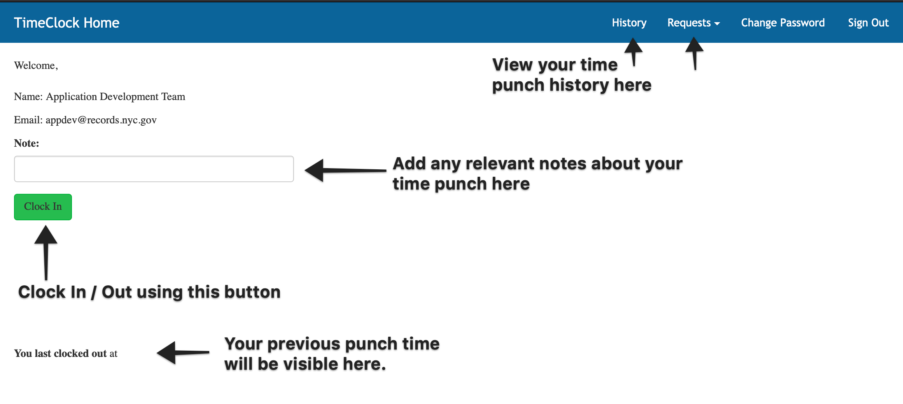
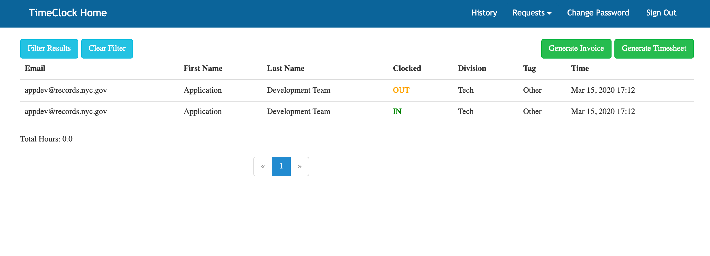
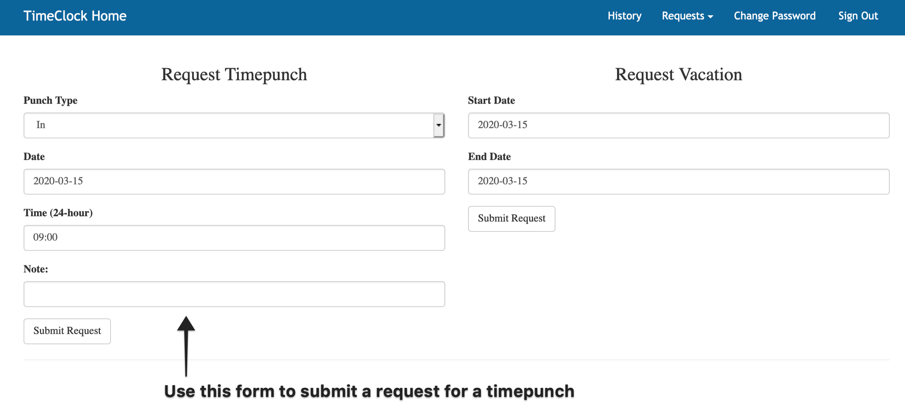

Welcome to NYC Department of Records Timeclock’s documentation!¶
Getting Started¶
The Records Timeclock is deployed at https://timeclock.getinfo.nyc/.
In order to access it you will need to reach out to the Department of Records Human Resources division.
Logging In¶
Once you receive an email with your temporary password, click on the link in the email to login. Your username is your email address and your welcome email contained your temporary password.
{kind=link}
Upon your first login you will need to choose a new password. Passwords must be at least 8 characters long and must contain a number and an uppercase letter.
{kind=link}
Forgotten Password¶
If you forget your password, you can click on the “Forgot Password” link on the home page.
{kind=link}
You will be sent a password reset link that you can use to reset your password. Passwords must be at least 8 characters long and must contain a number and an uppercase letter.
{kind=link}
Clocking In / Out¶
After logging in you will be able to clock in or out using the clock in / out button.
If you need to provide additional information when you enter your time punch you can use the “Note” field.
{kind=link}
Viewing Your Timesheet¶
You can view your timesheet history by clicking on the “History” button in the toolbar.
The page will show each timepunch you have submitted. You can also generate a timesheet by clicking on the “Generate Timesheet” button. This will generate a PDF you can submit to HR to corroborate your time.
{kind=link}
Requesting a Timepunch¶
If for any reason you were unable to submit a timepunch by clicking on the Clock In / Clock Out button you can submit a time punch by going to https://timeclock.getinfo.nyc/request_timepunch.
You will be required to provide a note explaining why you were unable to clock in or out.
{kind=link}
Getting Help¶
If you need assistance, please contact submit a ticket to the DORIS IT Service Desk and CC the Application Support team at appsupport at nycrecords dot atlassian dot net.